Photo credits
The dish pictures on the main page are representative photos of each kind of dish, taken from Wikimedia Commons under open licenses. They were not taken at the restaurants listed.
Each entry links to its source page, where the full license text is available. Restaurant photos, where shown, come from Google Maps and are credited on the photo itself.
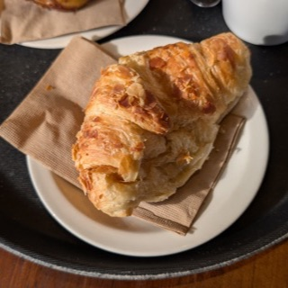
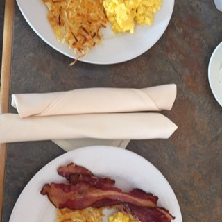
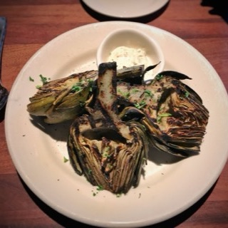
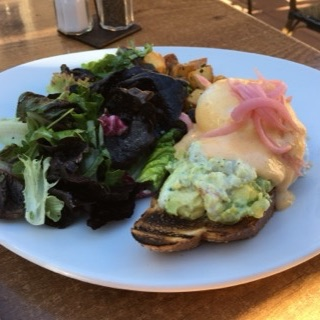
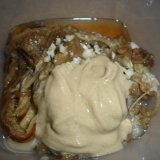
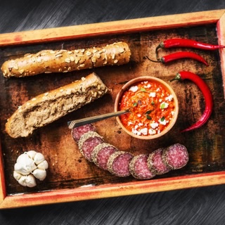
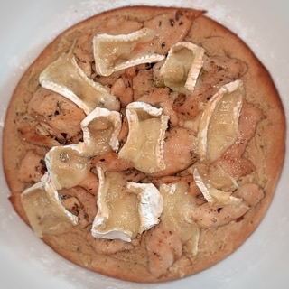
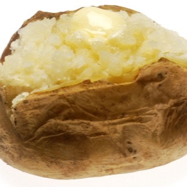
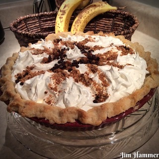
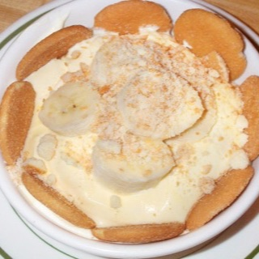
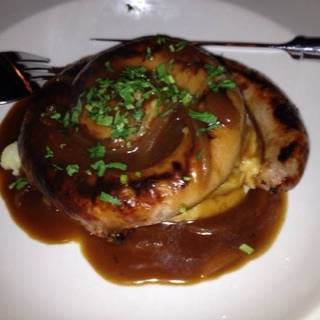
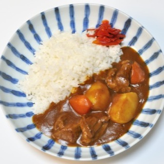
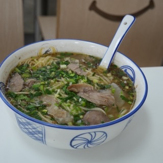
beef noodle soup
Beef Noodles soup from Jinyi Beef Noodle Soup Inn in Shenzhen.jpg
Peachyeung316 · CC BY-SA 4.0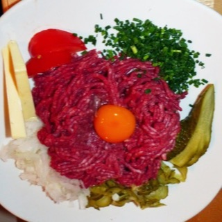
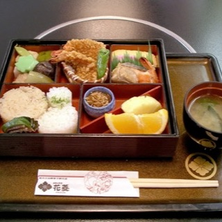
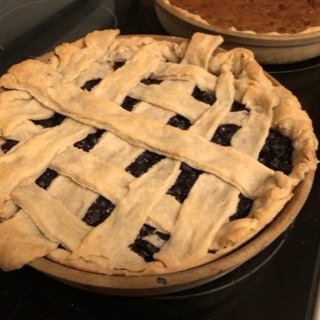
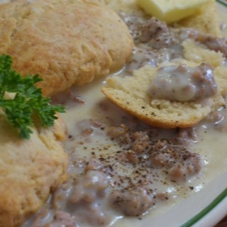
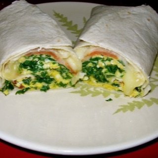
breakfast burrito
Bacon Kale Breakfast Burrito (8429773809).jpg
Cajsa Lilliehook from Portland · CC BY-SA 2.0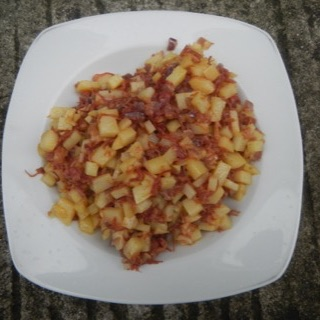
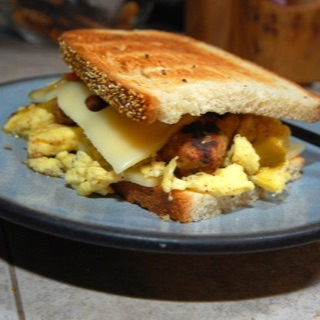
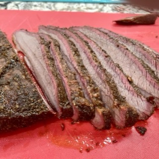
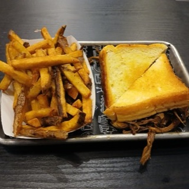
brisket sandwich
Brisket and grilled cheese sandwich with a side of French fries 2.jpg
Ser Amantio di Nicolao · CC BY-SA 4.0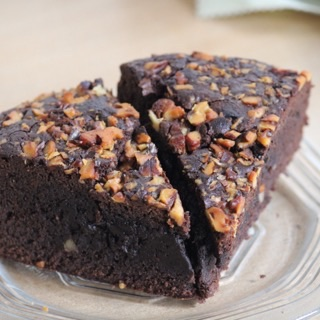
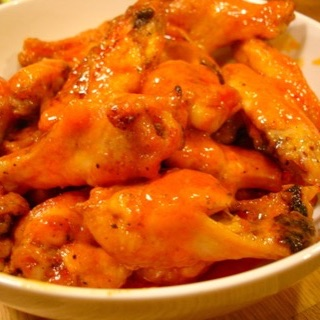
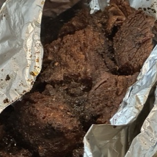
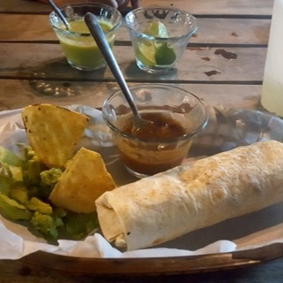
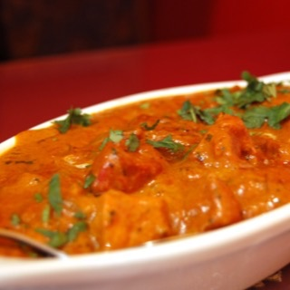
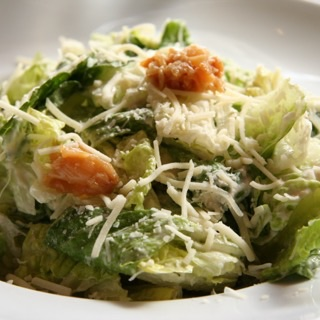
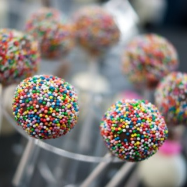
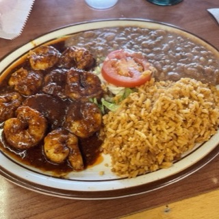
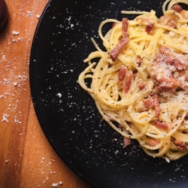
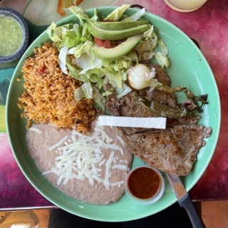
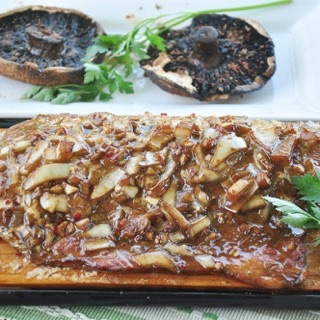
cedar plank salmon
Cedar Plank Salmon with Balsamic Ginger Marinade (28836223862).jpg
Sharon Chen from Austin, United States · CC BY 2.0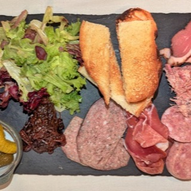
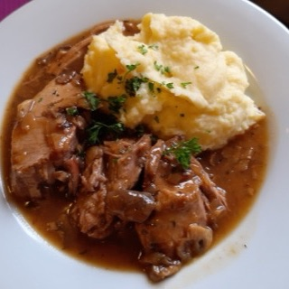
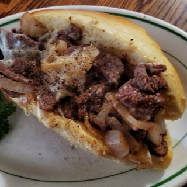
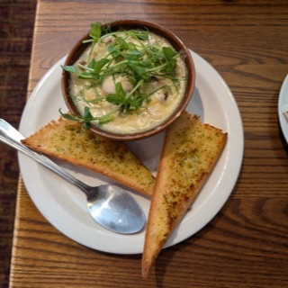
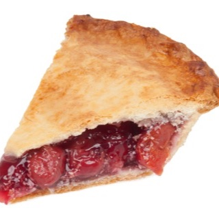
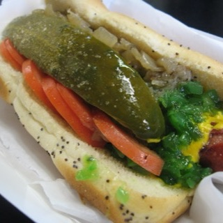
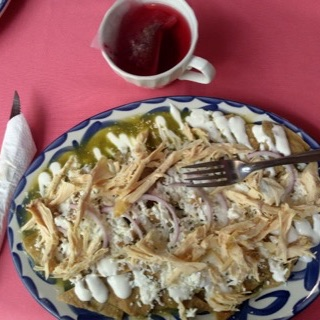
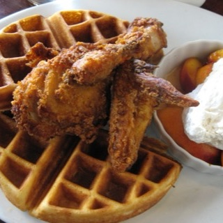
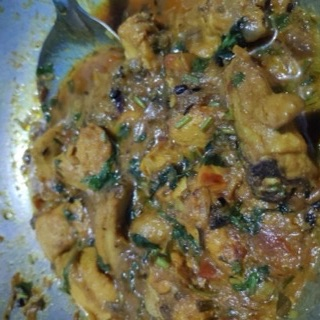
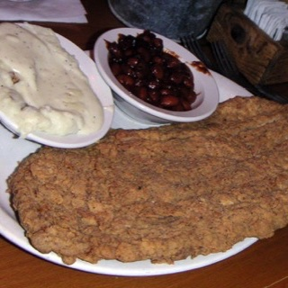
chicken fried steak
CountryFriedSteak.jpg
No machine-readable author provided. Bloodshedder~commonswiki assumed (based on copyright claims). · CC BY-SA 2.5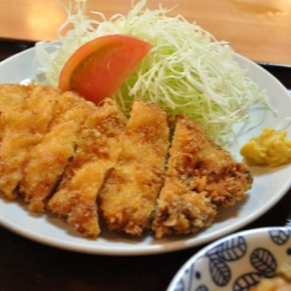
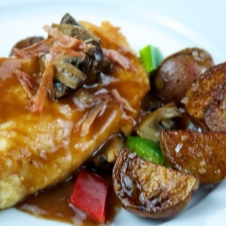
chicken marsala
Flickr preppybyday 4843102799--Chicken marsala.jpg
Evan Joshua Swigart (TheCulinaryGeek) from Chicago, Illinois, USA; hometown of Ames, Iowa, USA · CC BY 2.0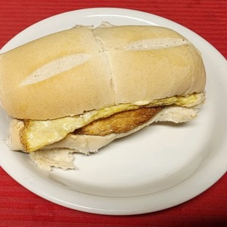
chicken sandwich
Argentine chicken sandwich with mozzarella cheese, fried egg, tomato and mayonnaise.jpg
Horacio Cambeiro · CC BY-SA 3.0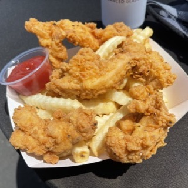
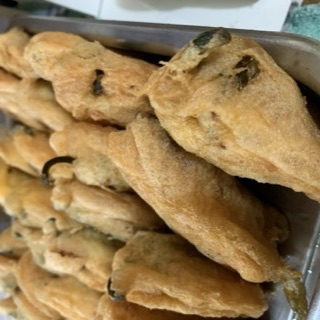
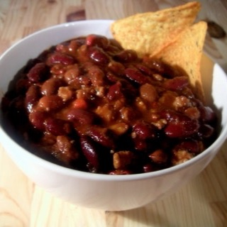
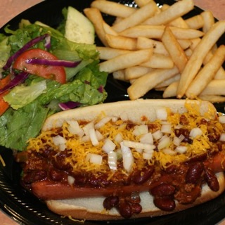
- clam chowder
Quail 07 bg 041506.jpg
Jon SullivanThe original uploader was Y6y6y6 at English Wikipedia. · Public domain - cupbop
Korean Beef Bulgogi Rice Bowl (34817154336).jpg
A Healthier Michigan from Detroit, United States · CC BY-SA 2.0 - drunken noodles
Guaytiew Pad Kee Mao (Drunken Noodles) with Veg & Tofu - Rosa's Thai 2025-07-22.jpg
Andy Li · CC0 - french dip
French dip sandwich with pickles at Circus Circus Reno in Reno, Nevada.jpg
Sam Craig · CC BY-SA 2.0 - french fries
Cajun fries from Popeyes Louisiana Kitchen, Stratford, Ontario, 2025-08-04.jpg
Chris Woodrich · CC BY-SA 4.0 - khao soi
Chiang Mai - Khao Soi Khun Yai - ข้าวซอยคุณยาย เชียงใหม่ (2026) - IMG 05.jpg
Chainwit. · CC BY 4.0 - lava cake
Vegan Flourless Swiss Chocolate Molten Lava Cake (4865230778).jpg
Vegan Feast Catering · CC BY 2.0 - mac and cheese
Flickr qmnonic 123431456--Kraft Dinner and veggie dogs.jpg
Matt MacGillivray from Toronto, Ontario, Canada · CC BY 2.0 - mongolian beef
Mongolian Beef with rice and noodles.jpg
Craig Dugas from Bozeman, Montana, USA · CC BY-SA 2.0 - orange chicken
Flickr preppybyday 4786746354--Orange chicken.jpg
Evan Joshua Swigart (TheCulinaryGeek) from Chicago, Illinois, USA; hometown of Ames, Iowa, USA · CC BY 2.0 
- roast beef sandwich
A roast beef sandwich with au jus sauce for dipping, served with a side of fries..jpg
4chewnahdoe · CC BY-SA 4.0 - sausage rolls
Apple turnovers Sausage rolls and Kentish pasties at Broadstairs Kent England.jpg
Acabashi · CC BY-SA 4.0 - seafood pasta
Liat Portal for Foodie Disorder - Fettuccine with Shrimp, Scallops, and Spinach.jpg
HaJunkiyada · CC BY-SA 4.0 - shrimp toast
Shrimp toast appetizer at TRN Cafe, with dipping sauce.jpg
Ser Amantio di Nicolao · CC BY-SA 3.0 - soft pretzel
Clara Peeters - Still Life with Cheeses, Almonds and Pretzels.jpg
Clara Peeters · Public domain - tlayuda
Tlayuda12-05oaxaca013x.jpg
The original uploader was Bobak at English Wikipedia. · CC BY-SA 2.5
191 photos. Licenses are as stated on Wikimedia Commons at the time of download.